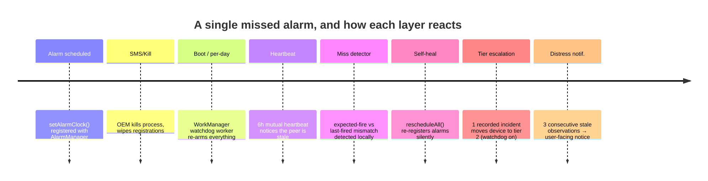

How Workday Wake is engineered to keep ringing on Xiaomi, Samsung, Huawei and other devices with aggressive battery management — and what you can check on your phone.
On a stock Android device (a Google Pixel, for example), a well-written alarm app mostly just works. On a large share of the Android installed base it does not: several manufacturers ship power-management features that kill background apps, silently drop scheduled alarms, or block the app from restarting itself — usually without any notification to the app that something was cancelled.
This page is the public, readable version of that engineering story. It explains what these devices actually do, what the app does in response, and how you can see and share diagnostics from inside the app if something ever goes wrong. Per-brand setup steps and the app's own guidance screens come from the same source; if this page and the app ever disagree, the app's Settings > Reliability screen is the authoritative one for your device.
| Mechanism | Typical on | Effect on a naive alarm app |
|---|---|---|
| Recents swipe-kill / force-stop | Xiaomi (MIUI/HyperOS), Samsung (One UI) | Scheduled alarm registrations are wiped, with no callback to the app |
| Cached-process kill (“memory cleaner”) | Xiaomi, Oppo/ColorOS, Samsung | Process dies without warning; anything the app planned to do at process level is lost |
| Background freezer / autostart gates | Xiaomi (HyperOS/MIUI Autostart), Oppo/ColorOS (DuraSpeed) | Alarms may be delivered, but the process that rings them is frozen — or the app can never restart itself |
| Battery optimization set to “Restricted” | Stock Android too, plus OEM battery managers | Alarm deliveries get delayed or batched; even the highest-priority alarm API can be starved |
| Deep Doze / low activity buckets | All Android; thresholds vary per skin | Deliveries deferred unless the alarm API is exempt |
| Boot-broadcast suppression (Autostart) | Xiaomi/MIUI, HyperOS | Alarms are not re-armed after a reboot until the user grants Autostart |
| Backup/restore and OS upgrades | All Android | Same as a swipe-kill: registrations silently gone |
No single mechanism covers every skin above, so Workday Wake stacks independent layers. Each one assumes the previous layer may already have been destroyed:
setAlarmClock() — the highest-priority alarm API Android offers:
exempt from Doze, visible in the system clock UI, and delivered even when the process
is dead. It also puts the small alarm icon in the status bar; that is the app working,
not a bug.If a layer exists only to catch the previous layer failing, it is doing its job — misses, self-heals and escalations are recorded, not hidden.
These diagrams are rendered straight from the engineering documentation. They are hand-maintained alongside the implementation and change only when the reliability design itself changes.


setAlarmClock() delivers even when the process is dead




The app ships built-in guidance (Settings > Reliability on affected devices) with the exact steps per manufacturer. The relevant ones in short form — replace “Workday Wake” with the app name in your launcher wherever the setting names it:
| Brand / skin | Steps (as in the app's Device Battery Guide) |
|---|---|
| Xiaomi / MIUI, HyperOS | Allow Autostart; in custom permissions enable “Show on Lock screen” and “Display pop-up windows while running in the background”; set App > Battery saver to “No restrictions”; lock the app in recent apps (swipe down or padlock). |
| Samsung / One UI | Settings > Battery and device care > Battery > Background usage limits: remove from “Sleeping apps” and “Deep sleeping apps”, add to “Never sleeping apps”; Settings > Apps > Workday Wake > Battery > Unrestricted. Also ensure “Put unused apps to sleep” is off — it can suppress alarms for apps unused for days. |
| Huawei / EMUI, HarmonyOS | Settings > Battery > App launch: set “Manage manually” and enable Auto-launch, Secondary launch and Run in background; Battery optimization: “Don't allow” (opt out). |
| OnePlus / Oppo / Realme (ColorOS) | Battery optimization: “Not optimized”; App info > Battery: “Allow background activity”/“Unrestricted”; in the startup manager allow auto-start; in DuraSpeed remove Workday Wake from the monitored list. |
| Vivo / iQOO | In the permissions manager allow auto-start; disable battery optimization; allow background activity and lock in recent apps. |
| Sony | Settings > Battery > STAMINA mode: “Off” — or turn off its “Prefer battery time” extra restrictor. |
Further families (Asus PowerMaster, Meizu, Lenovo, Motorola Battery care, Nokia DuraSpeed, Transsion/itel/Infinix Phone Master) get the same treatment inside the app: Settings > Reliability detects your manufacturer and shows only the steps that apply to your device. All steps leave the app as permanent string resources; none are hard-coded or brand-specific forks.
Every piece of reliability engineering above leaves a trace you can inspect locally. In Settings > Diagnostics the app answers the same questions a bug report would ask:
In Settings > Reliability you can also see the protection tier your device is on (“Tier 1 / Tier 2”), how many missed alarms were counted, and — on affected brands — the per-brand Device Battery Guide itself.
If an alarm failed and you want help, Settings > Diagnostics has a “send to developer” action:
An alarm clock has one job. Workday Wake was engineered from the start around the hardest versions of that job: it schedules in a way that survives process death, it re-arms what gets wiped, it supervises itself with a second process where needed, and it reports honestly on-device when something went wrong. And the privacy line is absolute — none of that honesty costs you your data.
Found a device where the guide does not hold? Please open an issue and, if you can, attach the on-device diagnostics via the voluntary share action. That feedback loop is the one thing an emulator cannot substitute.